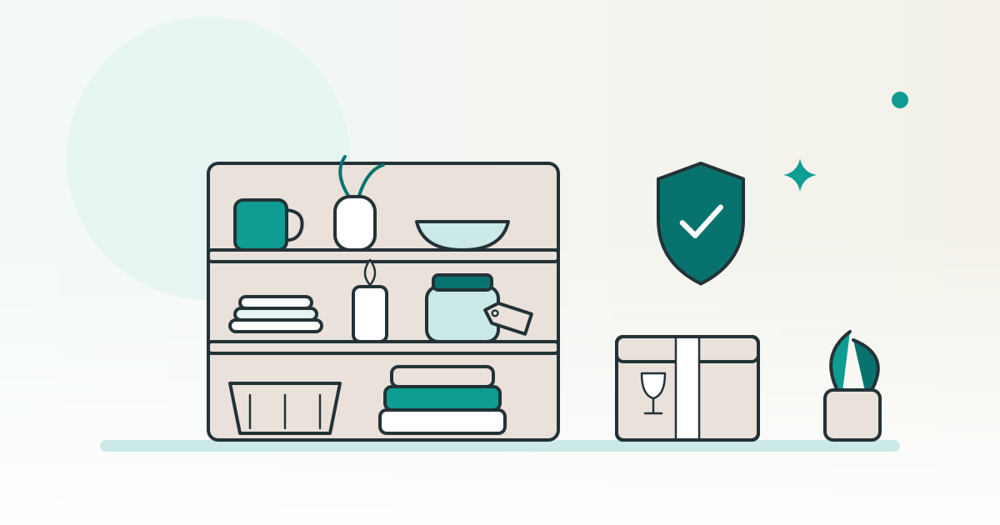

SHOPKIT コラム
雑貨屋のネットショップを開くには品ぞろえと商品の表示・安全の確かめ方

雑貨屋のネットショップは、誰がどこで使う商品をそろえるかを決め、販売前に表示と安全の資料をそろえて開業の準備を進めます。見た目が似ていても、材質・用途・電気の使用などで調べる決まりが変わります。まずは商品候補を分け、資料のそろった物から販売準備を進める方法です。
この記事は、完成品のネットショップを販売している SHOPKIT が書いています。
この記事で分かること
- インテリア雑貨の品ぞろえを、使う場面から絞る方法
- 品質表示、食品に触れる用品、電気用品で調べる範囲の違い
- 商品説明と梱包の準備、掲載されているお店の見方
雑貨屋のネットショップは、使う場面から品ぞろえを絞る
最初のテーマは、色や国の雰囲気に加えて、使う場所と言葉で決めます。例えば「玄関で小物をまとめる」「机の上を整える」「棚に季節の飾りを置く」のような場面です。商品を増やすときにも、その場面に合うかを基準にできます。
インテリア雑貨の開業準備では、掲載写真の印象だけで商品を選ばず、次のように商品説明へつながる情報も並べます。表は商品を選ぶための編集部の整理で、各品の安全性や法律上の区分を判断するものではありません。
| テーマの例 | 品ぞろえの軸 | 商品ごとに残す情報 |
|---|---|---|
| 玄関の小物をまとめる | 置く物と置き場所に合う形。見た目に加え、出し入れのしやすさ。 | 外寸・内寸、素材、置いたときの安定性、手入れの方法。 |
| 机の上を整える | 何を収める物か。机の広さや、ほかの物と組み合わせた使い方。 | 入れられる物の大きさ、重さ、底面や角の仕上げ。 |
| 棚に季節の飾りを置く | 飾る位置や高さ。ほかの商品と並べたときの色と大きさ。 | 寸法、重さ、材質、倒れやすさ、梱包に必要な空間。 |
候補を選んだら、見本の写真と仕様をそろえます。「丈夫」「熱に強い」といった性質は、見た目や売り手の短い紹介文から補わず、裏付けとなる資料を求める項目にします。資料がそろわない性質を、お客様向けの説明に書き足さないことが大切です。
関連：ネットショップで何を売る？ペット用品から考えるジャンルの選び方
品質表示は、雑貨の呼び名ではなく対象品目ごとに調べる
家庭用品品質表示法の表示規制は、定められた家庭用品が対象です。消費者庁の対象品目一覧は、施行令などで指定された品目に表示の規制を求めると説明しています。雑貨という呼び名だけで、全部が同じ対象・同じ表示だとは判断しません。
消費者庁の製品別品質表示の手引きは、繊維製品、合成樹脂加工品、電気機械器具、雑貨工業品に分かれています。布物や樹脂の小物も、販売店での呼び名に関係なく、材質と用途をもとに該当する品目を探す進め方です。
例：強化ガラスの器具は、用途と表示方法まで読む
消費者庁の手引きでは、強化ガラス製器具の対象を飲食・食卓・台所向けの物に限定し、花瓶や置物などは除いています。表示項目として、品名、強化の種類、使用上の注意、表示する人や会社の情報を説明しています。出典：消費者庁「強化ガラス製器具」。
同じ手引きでは、使用上の注意を、ラベルや刻印など本体から離れにくい方法で示すよう説明しています。商品ページに文章を載せる準備に加えて、商品側に必要な表示があるかも見る論点です。
商品名・素材・用途と、表示の見本を一緒にそろえます。対象となる範囲、条件によって省略できる項目、表示を付ける場所まで手引きと照らします。仕入れたままのラベルで足りるかや、個別商品の区分は、資料を添えて消費者庁などの窓口に判断を求めます。
食品に触れる用品は、輸入の届出と安全の資料をそろえる
食器などを扱う候補に入れたら、使う目的と材質を先に整理します。飾るための物か、食品に触れて使う物かを分けます。写真だけから用途を決めず、製造者の仕様や使用上の注意を資料にします。
厚生労働省は、販売や営業のために食品等を輸入する場合、輸入する側に届出が必要だと説明しています。この食品等には、食品、添加物、器具、容器包装、乳幼児向けのおもちゃを含めています。販売や営業に使う場合は、少量であったり郵便で届いたりしても、届出が必要との案内です。出典：厚生労働省「食品等輸入手続について」。
同ページは、届出を受けた検疫所が書類を審査し、検査が必要かを判断する流れを説明しています。初めての輸入や不明な点は、届出予定先か近くの検疫所に相談する案内もあります。
- 商品と用途：写真・材質・寸法と、食品に触れる使い方をするか。
- 製造の情報：製造者や製造所、材料などについて、提供を受けられる資料。
- 届出や検査の資料：必要となる書類を検疫所に示してもらい、どの資料を用意できるかを分ける。
安全の基準と、輸入時の手続きの案内先も分けます。厚生労働省の器具・容器包装の案内では、食品衛生基準の行政は2024年4月に消費者庁へ移ったと説明しています。基準の情報は、同ページが案内する消費者庁の食品衛生基準審査も参照します。
国内の取引先から仕入れる候補でも、用途や材質、表示と安全に関する資料は残します。この記事は、特定の商品について届出の要否や販売の可否を判断するものではありません。
電気を使う雑貨は、電気用品安全法の対象と表示が論点になる
照明など電気を使う品を扱う前に、対象となる電気用品かを調べる段階を置きます。電気用品安全法の第2条は、法律でいう電気用品について、政令で定める機械・器具・材料などを対象にしています。電気を使う雑貨を一括りにせず、商品の仕様と対象範囲を照らす論点です。出典：電気用品安全法（e-Gov法令検索）。
同法の第3条は、対象品の製造・輸入の事業を始める者の届出を定めています。第10条は、検査などの義務を果たしたうえで付ける表示の規定です。仕入れ先の画像に記号があることだけを、必要な手続きがそろっている根拠にはしません。
第27条では、対象の電気用品を製造・輸入・販売する事業者は、原則として法定の表示がない品を売ったり、販売用に並べたりできないと定めています。同条には、用途を限って大臣の承認を受けた販売や、第8条第1項第1号の承認に係る品を扱う場合の例外もあります。
具体的な品目の区分や表示の細部は、ここでは説明しません。商品の型式、電源や接続の仕様、製造・輸入する者、表示の写真などをそろえ、経済産業省の窓口に対象範囲と必要な資料を尋ねます。この記事で個別の商品に法律を当てはめて結論を出すものではありません。
割れ物・かさばる物は、梱包した状態まで見て選ぶ
雑貨の品ぞろえには、荷物を包んだ後の大きさも選ぶ軸に入れます。商品だけなら小さくても、突き出した部分や割れやすい部分を守るために、箱や資材の空間が必要になることがあります。
- 届いた見本を記録する外箱、緩衝材、商品の表面や角を写真に残す。気になる傷や仕上げは、販売前に取引先へ伝える項目にする。
- 実際に包む中身同士が当たる箇所と、箱の中で動く箇所を減らす包み方を考える。複数の商品を同梱する場合も試す。
- 包んだ荷物を測る外寸と重さを発送方法の条件に照らし、必要な資材を商品ごとに残す。
- 購入前の案内につなげる送料、分けて送る場合の扱い、破損時の連絡先を、お店の案内と注文画面でそろえる。
「丁寧に包む」という説明だけで終わらせず、使う資材と包む順序を写真にして残します。開封したときに商品のどの部分が見えるかも含め、次の発送で同じ方法を使える形にする工夫です。梱包によって破損を防ぎ切れると約束するものではありません。
関連：ネットショップの送料の決め方｜発送方法・梱包と先に伝えること
掲載されている雑貨のお店は、品ぞろえを見る入口にする
掲載されている店の数と、商品の安全性や原価の情報は別の材料です。SHOPKITのサービスページに掲載している「インテリア・韓国雑貨」のお店は、2026年10月15日時点で13店です。同日時点のサービスページには、韓国雑貨のお店の商品原価は公開されていません。
SHOPKITの同日時点のサービスページでは、韓国・中国など海外のメーカーから仕入れると案内しています。出典：サービスページのお店の一覧とよくあるご質問。
お店を検討するときも、扱いたい商品の用途と仕様、付いている表示、安全に関する資料を別々に整理します。見た目やジャンルの掲載数から、個別商品の法令適合や売れ行きを推測しない進め方です。
関連：韓国雑貨のネットショップを始める｜仕入れ先の探し方と原価の見方
よくある質問
雑貨屋の品ぞろえは、インテリアもキッチン用品も一緒に始めてよいですか？
使う場面でテーマを決め、候補を用途と材質ごとに分ける方法です。品数を増やす前に、商品説明や必要な表示、安全に関する資料がそろっているかを整理します。
品質表示は、ネットショップの商品ページに書けば足りますか？
商品ページだけで足りるとは一律に判断しません。例えば強化ガラス製器具の手引きは、使用上の注意を本体から離れにくい方法で示すよう説明しています。品目ごとの表示方法まで読む論点です。
販売用の食器を少量だけ海外から送ってもらう場合も、届出を調べますか？
厚生労働省は、販売や営業に使う食品等は、輸入する量や郵便などの運び方にかかわらず届出が必要と案内しています。材質や用途をそろえ、検疫所で必要な資料と手続きを相談します。
電気を使う雑貨に表示があれば、その写真だけで販売を決められますか？
写真だけを根拠に決めません。電気用品安全法の対象範囲と、製造・輸入に関する届出や表示の資料を整理します。個別の商品については、仕様と表示を示して所管の窓口に判断を求めます。
※ SHOPKITの掲載ジャンル・仕入れ・原価の公開範囲は、2026年10月15日時点のサービスページの記載です。公的資料は2026年10月21日に確認しました。電気用品安全法は2025年12月25日施行の版を参照しています。最新の対象品目や表示、輸入手続きは各公式案内と窓口でお確かめください。